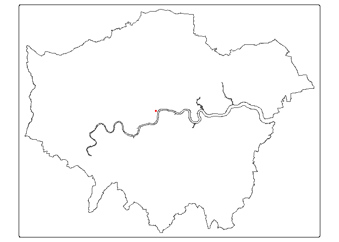
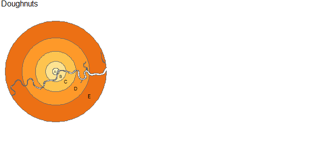

The goal of zonebuilder is to break up large geographic regions such as cities into manageable zones. Zoning systems are important in many fields, including demographics, economy, health, and transport. The zones have standard configuration, which enabled comparability across cities. See its website at zonebuilders.github.io/zonebuilder.
Installation
Install it from GitHub with:
Using zonebuilder
Zonebuilder works with sf objects and works well alongside the sf package and visualisation packages that support spatial data such as ggplot2, leaflet, mapdeck, mapview and tmap, the last of which we’ll use in the following maps. Attaching the package provides the example datasets london_area and london_cent, the geographic boundary and the centre of London:
library(zonebuilder)
library(tmap)
#> Warning in fun(libname, pkgname): rgeos: versions of GEOS runtime 3.8.0-CAPI-1.13.1
#> and GEOS at installation 3.6.2-CAPI-1.10.2differ
tm_shape(london_area) + tm_borders() + tm_shape(london_cent) + tm_dots("red")
The main function zb_zone breaks this geographical scale into zones. The default settings follow the ClockBoard configuration:

The idea behind this zoning system is based on the following principles:
- Most cities have a centre, the ‘heart’ of the city. Therefore, the zones are distributed around the centre.
- Typically, the population is much denser in and around the centre and also the traffic intensity is higher. Therefore, the zones are smaller in and around the centre.
- The rings (so A, B, C, D, etc) reflect the proximity to the centre point. The distances from the outer borders of the rings A, B, C, D, etc. follow the triangular number sequence 1, 3, 6, 10, etc. This means that in everyday life use, within zone A everything is in walking distance, from ring B to the centre requires a bike, from zone C and further to the centre typically requires public transport.
- Regarding direction relative to the centre, we use the clock analogy, since most people are familiar with that. So each ring (annuli) is divided into 12 segments, where segment 12 is directed at 12:00, segment 1 at 1:00 etc.
The package zonebuilder does not only create zoning systems based on the CloadBoard layout as illustrated below.
The function zb_zone makes use of zb_doughnut and zb_segment, which can also be used directly:
par(mfrow=c(1,2))
zb_plot(zb_doughnut(london_cent, london_area, n_circles = 5), title = "Doughnuts")
zb_plot(zb_segment(london_cent, n_segments = 20), title = "Segments")